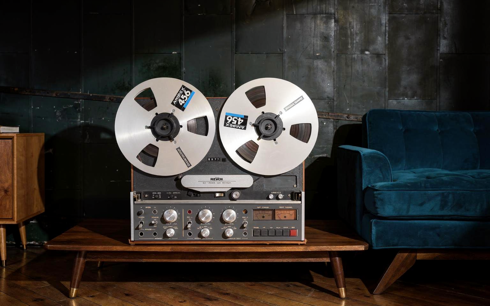

Revox B77
Analog makaralı teyp · Ses & Müzik
← Koleksiyona dönSesin yolunu görünür kılan makaralar, göstergeler ve doğrudan kontroller.
Revox B77, ses kaydının fiziksel bir malzemeyle kurduğu ilişkiyi açıkça gösteriyor: makaralar, bant yolu ve ön panel kontrolleri aynı yüzeyde okunabiliyor. Revox’un tarih anlatısında 1970’lere uzanan B77, markanın analog kayıt çizgisinin kalıcı modellerinden biri olarak yer alıyor. Büyük makaralar ve çift gösterge, dinlemeye olduğu kadar kayıt sürecine de dikkat çeken bir görünüm oluşturuyor. Cihazın çekiciliği, sesin kaydedilme yolunu göz önünde tutan bu doğrudan etkileşimde yatıyor.